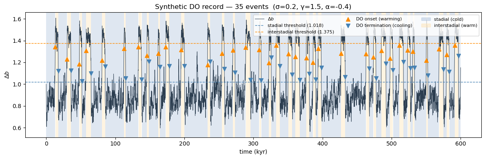
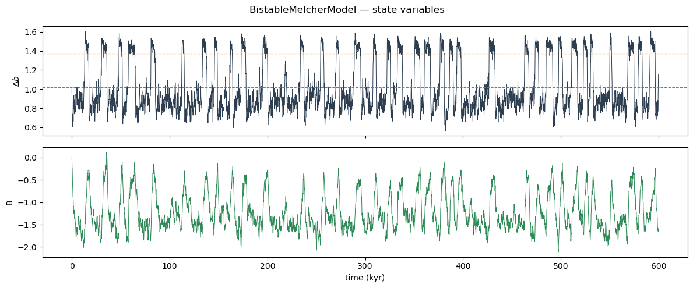
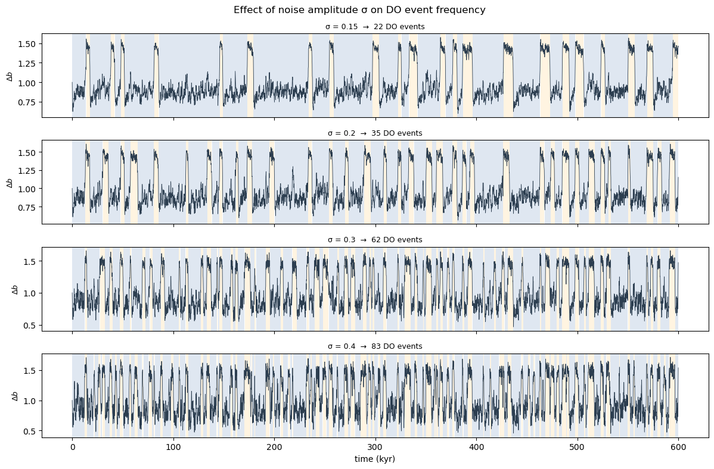
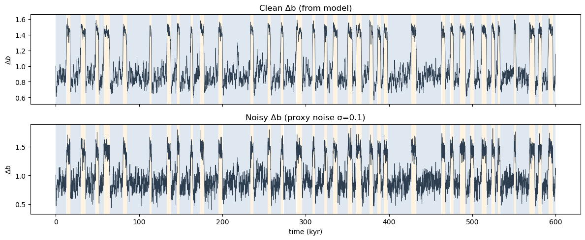

import numpy as np
import matplotlib.pyplot as plt
import matplotlib.patches as mpatches
from climatecritters.model_critters.bistable_melcher import (
BistableMelcherModel, classify_bistable_states
)BistableMelcherModel — Stochastic Dansgaard-Oeschger Transitions (Melcher et al. 2025)
Abstract
BistableMelcherModel implements the two-equation bistable Itô SDE from Melcher et al. (2025) that reproduces the statistical properties of Dansgaard-Oeschger (DO) events recorded in the NGRIP ice core. The system switches stochastically between a cold stadial state (weak AMOC) and a warm interstadial state (strong AMOC). This notebook shows how to generate synthetic DO records, automatically detect tipping-point transitions, visualise the stadial/interstadial classification, and explore the effect of noise amplitude and time-varying CO₂ forcing.
Keywords
BistableMelcherModel, Dansgaard-Oeschger, bistable, tipping points, stadial, interstadial, AMOC, stochastic SDE, synthetic palaeoclimate, Heun-Maruyama
Overview
BistableMelcherModel models the meridional buoyancy gradient \(\Delta b\) and buoyancy flux \(B\) as a coupled stochastic system:
\[\frac{d(\Delta b)}{dt} = -B - \left|q_0 + q_1(\Delta b - b_0)\right|(\Delta b - b_0) + \sigma\,dW\]
\[\frac{dB}{dt} = \frac{\Delta b + \alpha B - \gamma}{\tau} + \sigma\,dW\]
The nonlinear restoring force creates two stable fixed points — the bistable potential wells corresponding to the stadial and interstadial states. Noise \(\sigma\,dW\) drives spontaneous transitions between them.
Parameters
| Name | Description | Default |
|---|---|---|
sigma |
Noise amplitude (both state variables) | 0.2 |
gamma |
External forcing ∝ atmospheric CO₂ | 1.5 |
alpha |
Southern Ocean AABW coupling | 0.0 |
b0 |
Centre of the bistable potential well | 0.625 |
q0 |
Constant term in restoring force | −9.0 |
q1 |
Linear coefficient in restoring force | 12.0 |
tau |
Buoyancy-flux relaxation timescale | 0.902 |
b0, q0, q1, tau are calibrated from NGRIP (Melcher et al. 2025). sigma, gamma, and alpha support time-varying values via callables or Forcing objects.
State variables: db (\(\Delta b\)), B.
Diagnostic variable: states (auto-populated after every integrate() call).
Generate a synthetic DO record
model = BistableMelcherModel(sigma=0.2, gamma=1.5, alpha=-0.4)
output = model.integrate(
t_span=(0, 599.88), y0=[1.0, 0.0],
method='heun_maruyama', dt=0.012,
kwargs={'random_seed': 42, 'si': 0.12},
)
db = output.state_variables['db']
B = output.state_variables['B']
t = output.time
states = output.diagnostic_variables['states'] # 1 = stadial, 0 = interstadial
stadial_thresh = model.stadial_threshold
interstadial_thresh = model.interstadial_threshold
n_events = int(np.sum(np.diff(states) == -1))
print(f'Stadial threshold: {stadial_thresh:.3f}')
print(f'Interstadial threshold: {interstadial_thresh:.3f}')
print(f'Number of DO events: {n_events}')Stadial threshold: 1.018
Interstadial threshold: 1.375
Number of DO events: 35Δb time series with detected tipping points
fig, ax = plt.subplots(figsize=(12, 4))
# shade stadial (cold) and interstadial (warm) periods
in_stadial = states == 1
transitions = np.where(np.diff(states.astype(int)) != 0)[0]
boundaries = np.concatenate([[0], transitions + 1, [len(states)]])
for i in range(len(boundaries) - 1):
sl = slice(boundaries[i], boundaries[i + 1])
color = '#b0c4de' if states[boundaries[i]] == 1 else '#ffe4b5'
ax.axvspan(t[sl][0], t[sl][-1], color=color, alpha=0.4, lw=0)
# Δb time series
ax.plot(t, db, lw=0.7, color='#2c3e50', label=r'$\Delta b$')
# threshold lines
ax.axhline(stadial_thresh, ls='--', lw=1.0, color='steelblue', label=f'stadial threshold ({stadial_thresh:.3f})')
ax.axhline(interstadial_thresh, ls='--', lw=1.0, color='darkorange', label=f'interstadial threshold ({interstadial_thresh:.3f})')
# mark tipping-point transitions
do_onsets = np.where(np.diff(states) == -1)[0] # stadial → interstadial
do_offsets = np.where(np.diff(states) == 1)[0] # interstadial → stadial
ax.scatter(t[do_onsets], db[do_onsets], marker='^', s=50, color='darkorange', zorder=5, label='DO onset (warming)')
ax.scatter(t[do_offsets], db[do_offsets], marker='v', s=50, color='steelblue', zorder=5, label='DO termination (cooling)')
patch_s = mpatches.Patch(color='#b0c4de', alpha=0.5, label='stadial (cold)')
patch_i = mpatches.Patch(color='#ffe4b5', alpha=0.5, label='interstadial (warm)')
handles, labels = ax.get_legend_handles_labels()
ax.legend(handles=handles + [patch_s, patch_i], fontsize=8, ncol=3, loc='upper right')
ax.set_xlabel('time (kyr)')
ax.set_ylabel(r'$\Delta b$')
ax.set_title(f'Synthetic DO record — {n_events} events (σ={model.sigma}, γ={model.gamma}, α={model.alpha})')
plt.tight_layout()
plt.show()
Figure. Synthetic \(\Delta b\) time series with automatically detected stadial (blue shading) and interstadial (orange shading) periods. Orange triangles mark DO onset events (abrupt warmings); blue triangles mark terminations (gradual coolings). Dashed lines show the Jacobian-derived hysteresis thresholds from model.stadial_threshold and model.interstadial_threshold,these are computed analytically from the model constants and are set automatically after every integrate() call.
Both state variables: Δb and B
fig, axes = plt.subplots(2, 1, figsize=(12, 5), sharex=True)
axes[0].plot(t, db, lw=0.7, color='#2c3e50')
axes[0].set_ylabel(r'$\Delta b$')
axes[0].axhline(stadial_thresh, ls='--', lw=0.9, color='steelblue')
axes[0].axhline(interstadial_thresh, ls='--', lw=0.9, color='darkorange')
axes[1].plot(t, B, lw=0.7, color='seagreen')
axes[1].set_ylabel('B')
axes[1].set_xlabel('time (kyr)')
fig.suptitle('BistableMelcherModel — state variables')
plt.tight_layout()
plt.show()
Figure. Top: primary state variable \(\Delta b\) (meridional buoyancy gradient) with hysteresis thresholds. Bottom: buoyancy flux \(B\), which relaxes on timescale \(\tau\) and acts as the slow variable that mediates transitions. The asymmetry between fast warmings and slower coolings is controlled by alpha.
Inspect all parameters
model.doc('parameters')
Parameters — BistableMelcherModel
══════════════════════════════════════════════════════════════════════════
Name Current value Description
──────────────────────────────────────────────────────────────────────────
sigma 0.2 Noise amplitude applied to both state variables.
Range [0.15, 0.4]. Default is 0.2.
gamma 1.5 External forcing proportional to atmospheric CO2.
Bistable behaviour occurs near γ ≈ 1.5; range [0.8,
3.2]. If callable, must follow the signature
contract in ``contracts/signal_model_contract.md``:
``(t)``, ``(t, state)``, or ``(t, state, model)``
with the first argument named ``t`` or ``time``.
Default is 1.5.
alpha -0.4 Southern Ocean AABW coupling; controls the asymmetry
between stadial and interstadial durations. Range
[-1.0, 0.0]. If callable, must follow the same
signature contract as gamma. Default is 0.0.
b0 0.625 Reference buoyancy gradient that sets the centre of
the bistable potential well. Default is 0.625
(calibrated from NGRIP, Melcher et al. 2025).
Changing this value shifts both fixed points and may
destroy bistability if moved far from the calibrated
value.
q0 -9 Constant term in the nonlinear restoring force.
Default is -9.0 (calibrated from NGRIP). Together
with ``q1`` it controls the depth and separation of
the two potential wells; large departures from the
default can eliminate one well and collapse the
system to monostable behaviour.
q1 12 Linear coefficient in the nonlinear restoring force.
Default is 12.0 (calibrated from NGRIP). Must be
positive for the restoring force to be bounded;
values far from the default alter the transition
rates.
tau 0.902 Relaxation time-scale of the buoyancy-flux equation
(in model time units). Default is 0.902 (calibrated
from NGRIP). Very small values make B relax almost
instantaneously and can suppress oscillations; very
large values slow the recovery from transitions.
══════════════════════════════════════════════════════════════════════════
Effect of noise amplitude σ
Higher sigma drives more frequent and less predictable transitions; lower sigma produces longer dwell times in each state.
sigmas = [0.15, 0.2, 0.3, 0.4]
sigma_outputs = {}
for s in sigmas:
m = BistableMelcherModel(sigma=s, gamma=1.5, alpha=-0.4)
out = m.integrate(
t_span=(0, 599.88), y0=[1.0, 0.0],
method='heun_maruyama', dt=0.012,
kwargs={'random_seed': 42, 'si': 0.12},
)
n = int(np.sum(np.diff(out.diagnostic_variables['states']) == -1))
sigma_outputs[s] = (out, n)
print(f'sigma={s:.2f} → {n} DO events')sigma=0.15 → 22 DO events
sigma=0.20 → 35 DO events
sigma=0.30 → 62 DO events
sigma=0.40 → 83 DO eventsfig, axes = plt.subplots(len(sigmas), 1, figsize=(12, 8), sharex=True)
for ax, s in zip(axes, sigmas):
out, n = sigma_outputs[s]
db_s = out.state_variables['db']
st_s = out.diagnostic_variables['states']
t_s = out.time
boundaries = np.concatenate([[0], np.where(np.diff(st_s.astype(int)) != 0)[0] + 1, [len(st_s)]])
for i in range(len(boundaries) - 1):
sl = slice(boundaries[i], boundaries[i + 1])
color = '#b0c4de' if st_s[boundaries[i]] == 1 else '#ffe4b5'
ax.axvspan(t_s[sl][0], t_s[sl][-1], color=color, alpha=0.4, lw=0)
ax.plot(t_s, db_s, lw=0.6, color='#2c3e50')
ax.set_ylabel(r'$\Delta b$', fontsize=9)
ax.set_title(f'σ = {s} → {n} DO events', fontsize=9)
axes[-1].set_xlabel('time (kyr)')
fig.suptitle('Effect of noise amplitude σ on DO event frequency')
plt.tight_layout()
plt.show()
Figure. Four runs with identical parameters except sigma. Low noise (\(\sigma=0.15\)) produces rare, widely-spaced transitions; high noise (\(\sigma=0.4\)) drives rapid flickering. The NGRIP-calibrated default is \(\sigma=0.2\).
Reclassify after adding proxy noise
In real palaeoclimate records, \(\Delta b\) is measured with proxy noise. classify_bistable_states lets you reclassify a noisy signal using the same hysteresis thresholds without re-running the SDE.
rng = np.random.default_rng(99)
noisy_db = db + rng.normal(0, 0.1, len(db))
states_noisy = classify_bistable_states(noisy_db, alpha=-0.4)
fig, axes = plt.subplots(2, 1, figsize=(12, 5), sharex=True)
for ax, sig, st, title in zip(
axes,
[db, noisy_db],
[states, states_noisy],
['Clean Δb (from model)', 'Noisy Δb (proxy noise σ=0.1)'],
):
boundaries = np.concatenate([[0], np.where(np.diff(st.astype(int)) != 0)[0] + 1, [len(st)]])
for i in range(len(boundaries) - 1):
sl = slice(boundaries[i], boundaries[i + 1])
color = '#b0c4de' if st[boundaries[i]] == 1 else '#ffe4b5'
ax.axvspan(t[sl][0], t[sl][-1], color=color, alpha=0.4, lw=0)
ax.plot(t, sig, lw=0.6, color='#2c3e50')
ax.set_ylabel(r'$\Delta b$')
ax.set_title(title)
axes[-1].set_xlabel('time (kyr)')
plt.tight_layout()
plt.show()
Figure. Top: clean \(\Delta b\) from the model with automatically classified states. Bottom: the same series after adding Gaussian proxy noise (\(\sigma=0.1\)), reclassified with classify_bistable_states. The hysteresis logic suppresses spurious flickering near the thresholds, so the state boundaries remain stable despite the added noise.